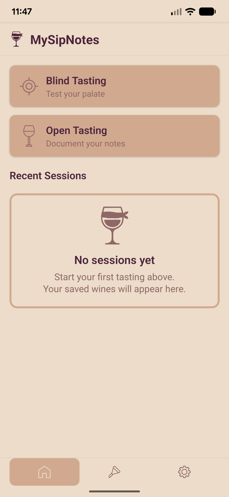
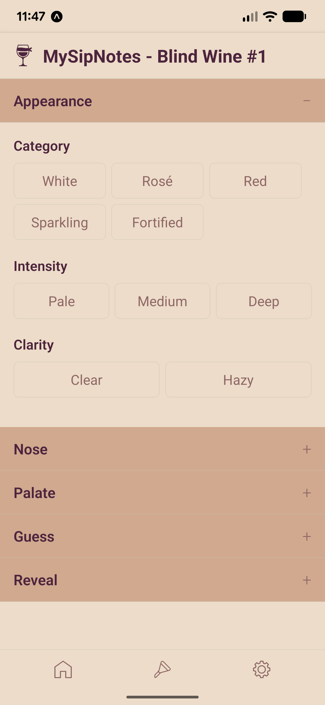
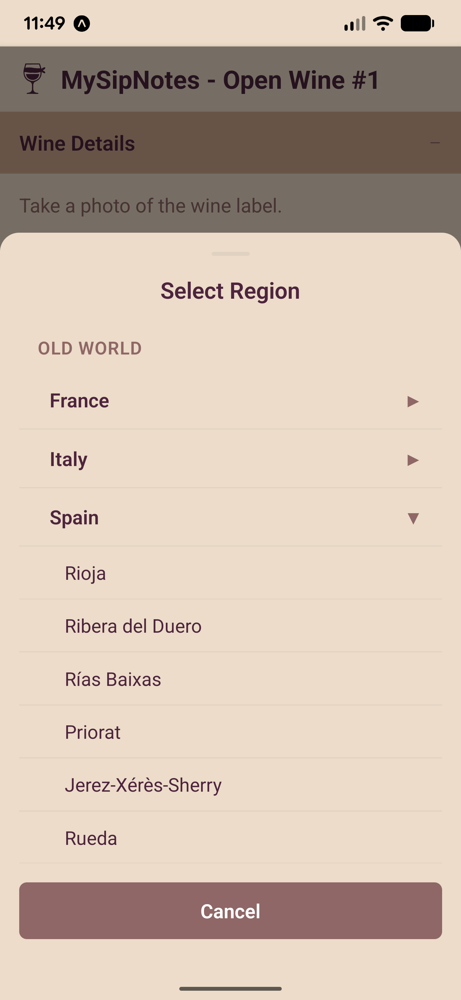

The photo-first wine journal
MySipNotes turns a quick photo of any wine label into a complete tasting record. Smart label recognition fills in the details—name, producer, vintage, region—so you can focus on the rating, tasting notes, and memories that matter.
MySipNotes is your personal wine companion that makes capturing and remembering wine effortless. Snap a photo at a winery, restaurant, wine shop, or home—front and back label—and let MySipNotes do the heavy lifting while your collection grows itself.
Snap a label and you're done. Add a back-label photo too, then zoom in anytime to read the fine print
Wine name, producer, vintage, and region are extracted automatically—just review and edit if needed
Find any bottle by varietal, region, rating, price, or the place you tasted it
Take a picture of the label—front and back—right from the app or your camera roll
Smart label recognition extracts the wine name, producer, vintage, and region automatically
Rate it, jot down tasting notes, add the price, and note where and who you shared it with
Every bottle is saved with photos, notes, and location—searchable anytime



"I'm using MySipNotes as an archive for all the wines I've been tasting. It's awesome to have them all in one place!"
Wine enjoyer
"Love the structured assessment."
WSET Diploma Student
Join the waitlist and be among the first to experience MySipNotes when it launches.